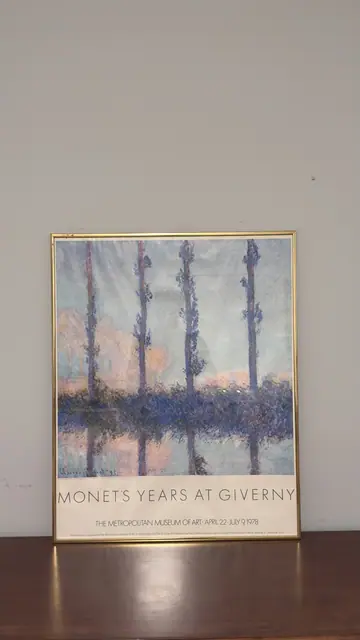
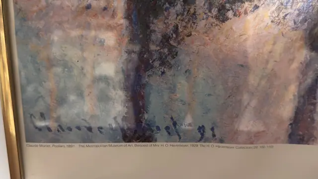

Paintings & Prints
Monet's Years at Giverny Metropolitan Museum Poster, Claude Monet, Signed, Framed, 1978
Claude Monet · 1978
Price Upon Request


About the Item
Claude Monet. A museum exhibition poster reproducing Monet's four poplars: four slender trunks rise the full height of the sheet from a lavender-blue band of foliage and its reflection, against a sky broken into flecks of pale blue, rose and cream. The brushwork of the original is fully visible in the reproduction, all short vertical dabs of violet, blue and pink. Below the image the poster carries the exhibition title and dates in fine capitals on a cream ground. Framed in a slim gold anodised aluminium section frame under glass. Medium: offset lithographic exhibition poster on paper. Signed lower left of the reproduced image, printed, reading "Claude Monet 91 (partly legible, part of the reproduced painting)". Inscribed on the reverse or mount: MONET'S YEARS AT GIVERNY; THE METROPOLITAN MUSEUM OF ART · APRIL 22 - JULY 9 1978; Fine print line at the foot of the sheet, only partly legible: 'The exhibition, organized by The Metropolitan Museum of Art in cooperation with The St. Louis Art Museum, has been made possible in part by a grant from the Robert Wood Johnson … Charitable Trust'. Condition: Poster lightly toned; a faint diagonal crease runs through the upper right of the image; frame clean.
Details
- Creator:
- Claude Monet
- Creation Year:
- 1978
- Dimensions:
- Height: 30.5 in (77.47 cm)
Width: 24.25 in (61.59 cm)
outside of frame - Medium:
- offset lithographic exhibition poster on paper
- Period:
- 20Th
- Condition:
- Offered in the condition shown in the photographs.
- Reference Number:
- VO-141
- Documentation:
- no certificate photographed
- Gallery Location:
- The Metropolitan Museum of Art